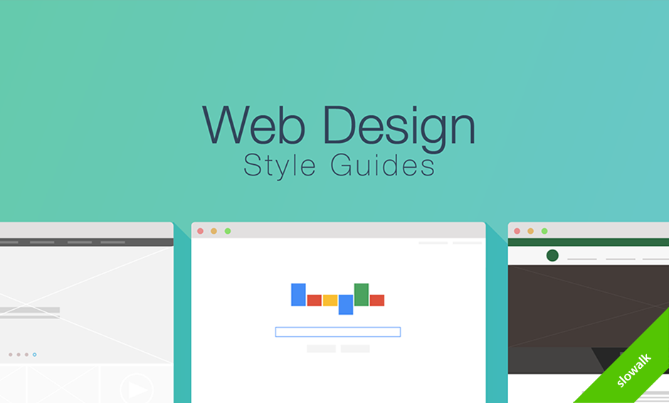
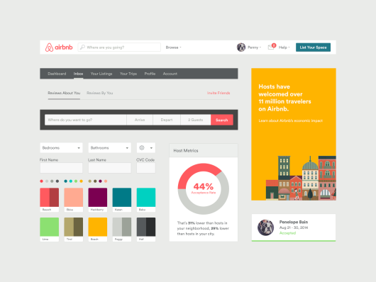
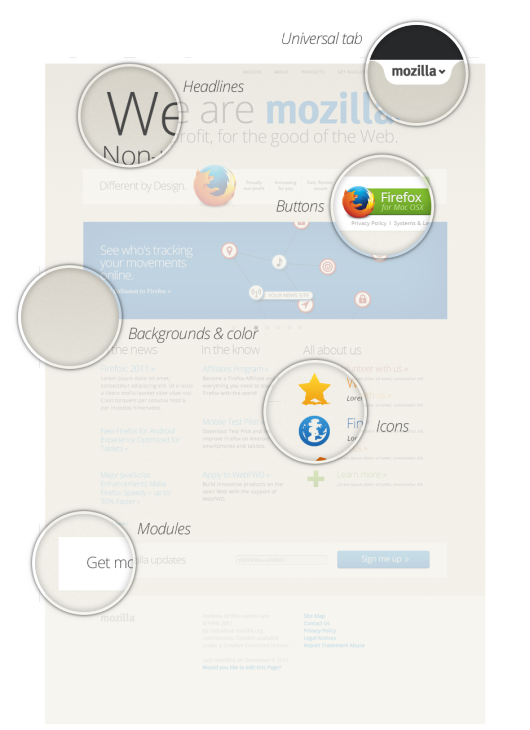
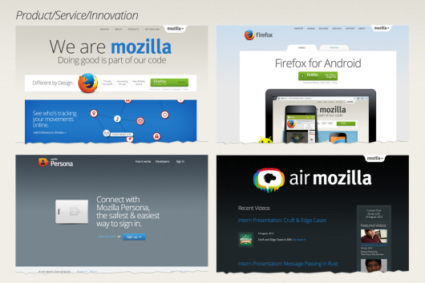
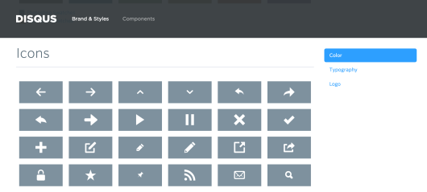
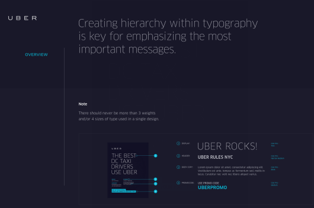
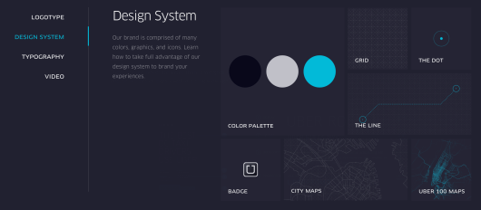
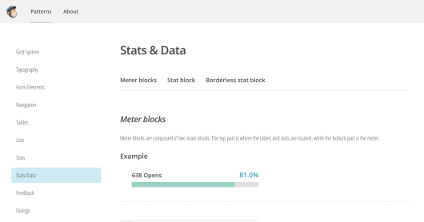
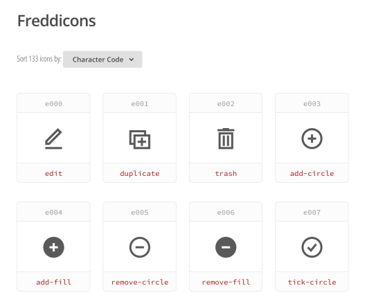
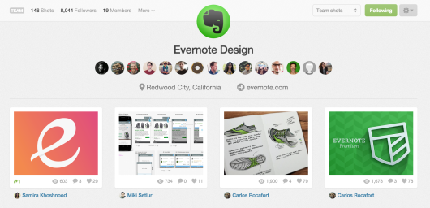

추천! 웹디자인 스타일 가이드 7가지
2015-09-02

스타일 가이드의 개념은 ‘패턴 라이브러리’, ‘UI 툴킷’, ‘UI 가이드라인’ 등등 소통하는 방식은 각양각색입니다. 어떤 단어로 소통하는 것은 중요하지 않습니다. 하지만 그 의미는 우리가 통일할 필요가 있는데요.
스타일 가이드는 웹사이트를 만드는 이들을 위한 설명서와 재료라고 할 수 있습니다. 이들은 개발자가 될 수 있으며, 디자이너, 콘텐츠 제작자, 혹은 협력업체의 사람일 수도 있습니다.
스타일 가이드의 의미를 알아봤는데요. 이제는 비교적 잘 만들어진 7가지 스타일 가이드를 소개합니다.
1. 에어비엔비(AIRBNB)
에어비엔비의 UI 툴킷은 폼의 입력필드, 메뉴, 광고와 툴바 등의 가이드를 가지고 있습니다. 특히 흥미로운 것은 그들만의 컬러 테마를 만들어서 보여줬다는 점이죠.

웹디자인은 뎁스와 대비 등 다양한 위계를 포함하고 있습니다. 여러분이 브랜드컬러를 3~4개 정도 제한하고 싶을 수도 있지만, 작업자들 입장에서는 그 다양한 위계를 가공하는 데는 한계가 있을수도 있습니다. 작업자들을 배려해서 다른 색상테마를 추가해보세요.
2. 모질라재단(MOZILLA FOUNDATION)
모질라재단은 파이어폭스를 만든 비영리단체입니다. 모질라재단은 그들의 온라인콘텐츠 스타일을 통일하기 위해 ‘샌드스톤(Sandstone)’을 만들었습니다. 샌드스톤은 스타일과 폼, 작은 버튼부터 전체 그리드까지 모두 이해하기 쉽게 만들었습니다.

모질라재단의 디자인 통합 컨셉은 모든 것을 똑같이 만드는 것을 의미하지 않는데요. 그들의 스타일 가이드는 각각 다른 환경에서 적용되었을 때 적절한 예시를 가지고 있습니다.

여러분의 웹 스타일 가이드가 매우 중요한 컨셉을 가지고 있다면, ‘샌드스톤’같은 방식은 일관성을 지키는데 큰 도움이 될 것입니다. 나중에 어떤 가이드를 더 포함할지라도, 지향점이 기준이 되기 때문입니다.
3. 디스커스(DISQUS)
댓글 시스템으로 유명한 디스커스는 스타일 가이드를 ‘브랜드와 스타일’과 ‘구성요소’로 나눴습니다. 웹디자인에서는 인하우스 디자이너와 그들의 API를 쓰는 사용자들을 위한 스타일 가이드를 만들었습니다.

때때로 여러분은 디스커스처럼 하나의 작은 구성요소만 디자인해서, 수 많은 사람들이 사용해야 되는 경우도 있습니다. 여러분이 이런 경우라면 공개는 물론이고, 잘 보이는 곳에 배치해야 합니다.
4. 우버(UBER)
우버의 스타일 가이드는 타이포그래피와 위계에 중점을 뒀습니다. 디자인에 따라 타이포 획의 굵기를 어떻게 적용할지 그들만의 방식을 만들었습니다.

더욱 매력적인 것은 그들의 브랜드 아이덴티티를 지도와 같은 UI에도 적용했다는 점입니다. 차량 예약 서비스라서 지도가 중요한 역할을 하기 때문에 더욱 신경 썼을 것입니다.

우버는 지도의 출발지, 목적지의 선까지도 아이덴티티를 부여했습니다. 여러분의 브랜드가 특정분야에 관련된 서비스라면, 그 분야에서 중요한 UI 요소에 아이덴티티를 어떻게 녹여낼 것인지 고민해봐야합니다.
5. 메일침프(MAILCHIMP)
요즘은 웹 서비스들이 더욱 복잡해지면서, 스타일 가이드에 고려할 점도 그만큼 많아졌습니다. 예를 들어 메일침프는 3가지 다른 스타일의 그래프를 제공합니다.

또한 그들은 메일침프만의 아이콘 ‘프레디콘’을 만들었습니다. 이렇게 브랜드만의 아이콘을 만드는 것은 시간이 오래 걸릴수도 있지만, 브랜드 성격에 특화될 수 있다고 생각합니다.

6. 에버노트(EVERNOTE)
에버노트팀은 드리블(Dribbble)에 디자인결과물을 올렸습니다. 에버노트의 아이콘, 일러스트레이션, 뱃지, 레이아웃 등 많은 것을 공유하고 있는데요.
내부에 스타일 가이드를 만드는 방식과 다르게, 사용자들에게 오픈해서 피드백을 직접 받고 반영하고 있습니다. 여러분도 디자인 결과물을 커뮤니티에 공유해보세요. 수 많은 사용자들의 피드백에 많은 도움을 받을 수 있을 거에요.
7. 버진 아메리카(VIRGIN AMERICA)
버진 아메리카 항공사의 최근 웹사이트 개편은 항공 예약 시스템에 혁신을 가져왔다고 회자되고 있는데요. 작업을 진행한 에이전시 워크앤코(Work & Co)는 케이스 스터디를 직접 웹사이트에 공유했습니다.
물론 디자인 스타일 가이드도 작업도 중요하지만, 왜 이런 결과물이 나왔는지 스토리텔링이 가미가 된다면 더욱 좋을 것 같네요.

이 7가지 사이트 외에도 훌륭한 스타일 가이드는 많습니다.
findguidelin.es를 보시면서 벤치마킹 스타일 가이드를 많이 찾아보세요.
*스타일 가이드 툴
스타일 가이드 제작을 어렵게 생각하지 마세요. 이미 스타일 가이드를 만드는 좋은 도구들이 나와있습니다. 그 중에 몇 가지 소개합니다.
Stylify, Bynder, Patternlab, Fabricator, Frotify, Style Guide Boilerplate, HugeInc Styleguide
출처: Canva